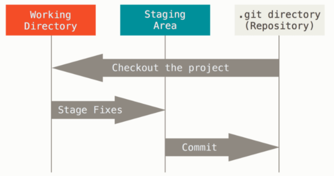

|
Objetivo General Identificar, porque es importante usar un control de versiones y porque escoger GIT y GITHUB Específicos * Comprender que son, los controladores de versiones y su importancia * Investigar cuales son los Fundamentos de Git, Sobre el Control de Versiones * Entender como funciona Git y GitHub comparado con otros Temática Acerca del Control de Versiones. Según Chacon, S. & Straub, B. (2014), un control de versiones es un sistema que registra los cambios realizados en un archivo o conjunto de archivos a lo largo del tiempo, de modo que puedas recuperar versiones específicas más adelante. Aunque en los ejemplos de este libro usarás archivos de código fuente como aquellos cuya versión está siendo controlada, en realidad puedes hacer lo mismo con casi cualquier tipo de archivo que encuentres en una computadora. Si eres diseñador gráfico o de web y quieres mantener cada versión de una imagen o diseño (es algo que sin duda vas a querer), usar un sistema de control de versiones (VCS por sus siglas en inglés) es una decisión muy acertada. Dicho sistema te permite regresar a versiones anteriores de tus archivos, regresar a una versión anterior del proyecto completo, comparar cambios a lo largo del tiempo, ver quién modificó por última vez algo que pueda estar causando problemas, ver quién introdujo un problema y cuándo, y mucho más. Usar un VCS también significa generalmente que si arruinas o pierdes archivos, será posible recuperarlos fácilmente. Adicionalmente, obtendrás todos estos beneficios a un costo muy bajo. |
 |
Widget para la red social Twitter Presentación del Feed o Contenido compartido en la Red Social de la universidad UNAD. |